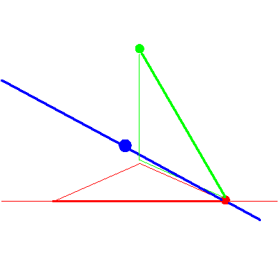
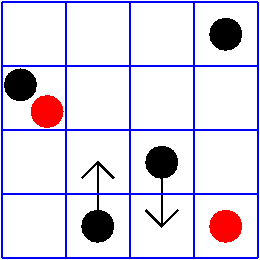

The line meeting a fixed point in P3


The line meeting a fixed point in P3 |
|
|  |
In the third, and subsequent stages of the specialization sequence, nothing happens to the solution line, even though the flags move quite a lot. We continue to display the checkers, though. This is again the case (no,no) of Table 2/Figure 8 in GLR. |
|  |